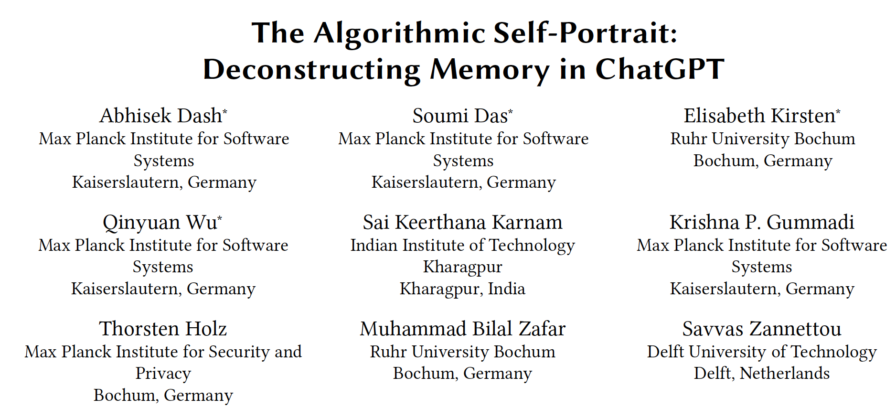
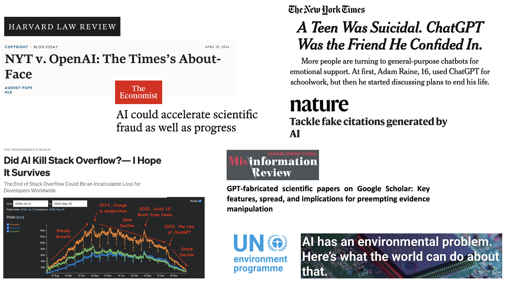
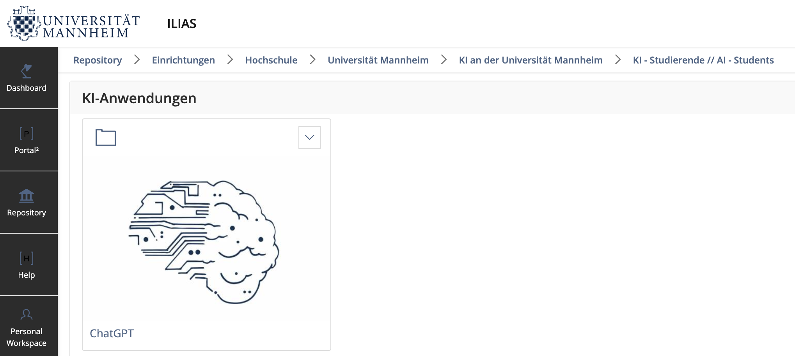
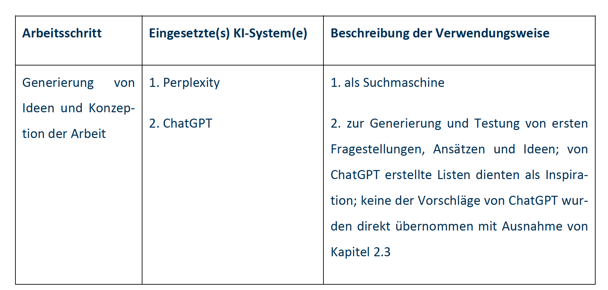

| Seminar dates and topics | ||
| Date | Topics | Required reading |
|---|---|---|
| 11 February 2026 |
|
|
| 18 February 2026 |
|
Lazer, D., & Radford, J. (2017). Data ex Machina: Introduction to Big Data. Annual Review of Sociology, 43(1), 19–39. Wagner, C., Stier, S., & Zens, M. (2025). What is Digital Behavioral Data? GESIS Guides to Digital Behavioral Data, 1. |
| 25 February 2026 |
|
Dash, A., Das, S., Kirsten, E., Wu, Q., Karnam, S. K., Gummadi, K. P., Holz, T., Zafar, M. B., & Zannettou, S. (2026). The Algorithmic Self-Portrait: Deconstructing Memory in ChatGPT. arXiv. University of Mannheim (2023). ChatGPT im Studium. AI-generated English translation. |
| 4 March 2026 |
|
Fiesler, C., & Proferes, N. (2018). ‘Participant’ Perceptions of Twitter Research Ethics. Social Media + Society, 4(1). Freelon, D. (2018). Computational Research in the Post-API Age. Political Communication, 35(4), 665–668. |
| 11 March 2026 |
|
Bak-Coleman, J., O’Connor, C., Bergstrom, C., & West, J. (2025). The Risks of Industry Influence in Tech Research. arXiv. Pierri, F., Araujo, T., Kruikemeier, S., Lorenz-Spreen, P., Abeele, M. M. P. V., Vandenbosch, L., Gonçalves-Sa, J., & Grabowicz, P. A. (2025). Research Opportunities and Challenges of the EU’s Digital Services Act. arXiv. |
| 18 March 2026 |
|
Mangold, F., & Stier, S. (2025). Overview of Working with Web Tracking Data. GESIS Guides to Digital Behavioral Data, 23. Silber, H., et al. Linking Surveys and Digital Trace Data: Insights From two Studies on Determinants of Data Sharing Behaviour. Journal of the Royal Statistical Society Series A: Statistics in Society, 185(S2), S387–S407. |
| 25 March 2026 |
|
Schwemmer, C., & Wieczorek, O. (2020). The Methodological Divide of Sociology: Evidence from Two Decades of Journal Publications. Sociology, 54(1), 3–21. Stuhler, O., Ton, C. D., & Ollion, E. (2025). From Codebooks to Promptbooks: Extracting Information from Text with Generative Large Language Models. Sociological Methods & Research, 54(3), 794–848. |
Using AI in Research
Sebastian Stier
University of Mannheim & GESIS – Leibniz Institute for the Social Sciences
2026-02-25
Agenda for today
R warmup session
Use of generative AI
1. R warmup session
Let’s start with some coding
- Go to https://sebastianstier.com/ma_css26/material.html
- Continue in 1_tidyverse.R
- We will look at the homework and explore additional tidyverse functions
2. Use of generative AI
The elephant in the room: AI, LLMs, ChatGPT et al.
University of Mannheim (2023). ChatGPT im Studium. AI-generated English translation.
Think-pair-share
- Discuss the ChatGPT im Studium guide with 2-3 neighbors (5-7 min.)
- How does AI threaten academic knowledge production?
- Are the instructions provided by the Uni sufficiently clear to you?
- Share and discuss your results with the full class
The algorithmic self-portrait: Deconstructing memory in ChatGPT

Dash, A., Das, S., Kirsten, E., Wu, Q., Karnam, S. K., Gummadi, K. P., Holz, T., Zafar, M. B., & Zannettou, S. (2026). The Algorithmic Self-Portrait: Deconstructing Memory in ChatGPT. arXiv.
Some problematic aspects of AI

https://harvardlawreview.org/blog/2024/04/nyt-v-openai-the-timess-about-face/; https://medium.com/tech-ai-chat/did-ai-kill-stack-overflow-i-hope-it-survives-798f66d9a6da; https://www.nytimes.com/2025/08/26/technology/chatgpt-openai-suicide.html; https://www.nature.com/articles/d41586-025-02482-1; https://misinforeview.hks.harvard.edu/article/gpt-fabricated-scientific-papers-on-google-scholar-key-features-spread-and-implications-for-preempting-evidence-manipulation; https://www.economist.com/science-and-technology/2024/02/01/ai-could-accelerate-scientific-fraud-as-well-as-progress; https://www.unep.org/news-and-stories/story/ai-has-environmental-problem-heres-what-world-can-do-about
Risks of AI in academic work I
- Undesired outputs and bias: AI models may generate undesired or biased content based on the training data
- Lack of quality and factuality: Generated content may be incorrect or fabricated, a phenomenon referred to as “hallucination”
- Lack of timeliness: Models without real-time access cannot provide up-to-date information
- Lack of reproducibility and explainability: Outputs are often not reproducible and small changes in inputs can lead to large differences in outputs
Risks of AI in academic work II
- Automation bias: Users might place too much trust in generated content
- The training dataset may contain unlawfully processed personal data or infringe on third-party intellectual property rights
- Outputs may unlawfully contain personal data or infringe on third-party intellectual property rights
- Generated content may be unlawful (e.g., offensive, incitement to hatred)
- Environmental impact
Potentials of AI in academic work
- Learning critical AI competencies and skills
- Summarizing content where completeness or 100% accuracy is not important
- Creating keywords and simple explanations for initial orientation
- Gaining a better understanding of a topic
- Structuring, lists and plans
- Clarifying your own ideas
- Receiving text feedback
Equal opportunities

Uni Mannheim has a local implementation of ChatGPT: ILIAS page “AI Students”
Recommendations I
- I am aware that I am responsible for the AI-generated output. I only use the output if I can assess its legality myself.
- I have read and observed the terms of use of the AI system. I know the purposes for which I am permitted to use the AI-generated output.
- I only enter copyrighted material (text, images, etc.) if I am authorized to do so, for example by obtaining prior permission from the copyright holder.
- I do not enter secret or confidential information unless there is an explicit regulation at my university for this purpose.
- I only enter personal data about myself or third parties into the AI system if I am certain that this is lawful. The same applies to querying such data from an AI system.
Recommendations II
- I have anonymized or pseudonymized personal data as far as possible before processing it with an AI system.
- If AI supports me in evaluations or decisions, I document this transparently and take possible errors into account.
- Wherever appropriate and necessary, I document the use of generative AI in a transparent manner.
- I acknowledge that AI may generate outputs that closely resemble another work and may therefore be considered plagiarism.
Disclosure statement

How should I as an instructor deal with AI?
- Require disclosure statements
- Judge the quality of your submitted work
- Reproducing entire paragraphs or pages of text from an AI chatbot is not acceptable \(\rightarrow\) I am good at spotting GPT-generated content
- I have presentations as a benchmark to contextualize your written work
- Appeal to you as students and life-long learners: using chatGPT in non-legitimate ways will not help you achieve the learning goals